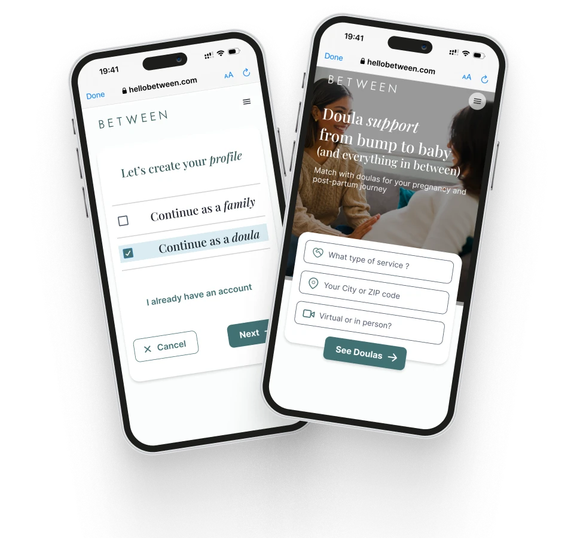

Expecting parent
Finding a doula she can trust
First-time parent. Lacks clear information about doula services and finds it hard to connect with the right one.
Between Health · Product Design Case Study
Doula support from bump to baby

Between Health is a platform connecting expecting and postpartum mothers with doulas, to create a positive birth experience.
I received an extensive feature list from the client, but the startup needed an MVP design within just a few weeks. Simplicity was essential, so we prioritised only the core features and set the rest aside for future iterations.
Discovery mattered more than usual here. We began by gathering requirements and analysing typical user stories, pain points, medical processes and competitor strategies. Then card sorting with the client and MoSCoW prioritisation defined what mattered most.
A mind map, empathy map, user personas, competitor analysis and an information structure turned that into requirements we could build.
The web app had to include:
Day to day we worked in a Slack channel, met twice a week for results and approvals, and kept project knowledge in Notion. Wireframes defined the screen flows for each iteration and got the partners’ approval.
Expecting parent
First-time parent. Lacks clear information about doula services and finds it hard to connect with the right one.
Independent doula
Five years in practice. Loses time to admin and scattered client information, and struggles to stand out.
Doula agency manager
Manages several doulas across disconnected tools, which slows scheduling and support.
Aspiring doula
Pursuing certification. Needs supervised experience, guidance and a way to start her practice.
Decision
Over 80% of our users would use the platform on a phone rather than a desktop. So every screen was designed for mobile first (375×812) and then scaled to desktop (1280×832).
Through discussions about design preferences and a mood board, we created a style guide, a design system and its components.
Components had to be easy to reuse on both mobile and desktop, because the project needed to continue later without designer support. The library grew from one iteration to the next, as the product needed it.
A user-friendly, minimal product. Every screen was created in mobile (375×812) and desktop (1280×832) sizes, with clickable prototypes to present to the partners and hand over to development.
Design goals were aligned with product management to meet the business objectives, and the UI stays responsive across devices.
What the design covers
Design outcome
Focused
MoSCoW prioritisation turned a long wish list into five core features.
Mobile first
Every screen designed for the phone first, then desktop.
Handover
Everything Between ordered, built so their team could continue without a designer.
Product discovery · User personas · MoSCoW prioritisation · Mobile-first design · Style guides · Component libraries · Developer handoff
Next project